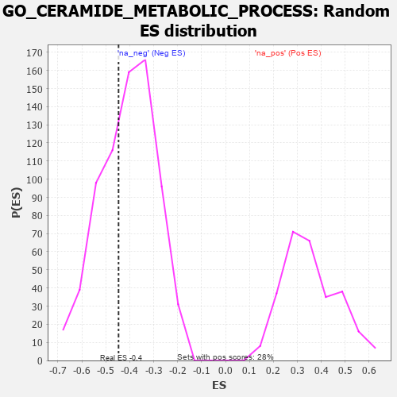

| | | Dataset | 7d |
| Phenotype | NoPhenotypeAvailable |
| Upregulated in class | na_neg |
| GeneSet | GO_CERAMIDE_METABOLIC_PROCESS |
| Enrichment Score (ES) | -0.4467844 |
| Normalized Enrichment Score (NES) | -1.0961988 |
| Nominal p-value | 0.3504155 |
| FDR q-value | 0.75580263 |
| FWER p-Value | 1.0 |
Table: GSEA Results Summary
 Fig 1: Enrichment plot: GO_CERAMIDE_METABOLIC_PROCESS
Fig 1: Enrichment plot: GO_CERAMIDE_METABOLIC_PROCESS
Profile of the Running ES Score & Positions of GeneSet Members on the Rank Ordered List
| PROBE | GENE SYMBOL | GENE_TITLE | RANK IN GENE LIST | RANK METRIC SCORE | RUNNING ES | CORE ENRICHMENT | | 1 | HTRA2 | | | 527 | 0.621 | -0.0063 | No |
| 2 | CLN8 | | | 769 | 0.539 | 0.0155 | No |
| 3 | SAMD8 | | | 836 | 0.522 | 0.0576 | No |
| 4 | SGPL1 | | | 1820 | 0.334 | -0.0337 | No |
| 5 | AGK | | | 2752 | 0.191 | -0.1324 | No |
| 6 | CLN6 | | | 2847 | 0.177 | -0.1271 | No |
| 7 | GALC | | | 3594 | 0.061 | -0.2150 | No |
| 8 | DEGS1 | | | 4747 | -0.148 | -0.3455 | No |
| 9 | ACER3 | | | 5390 | -0.294 | -0.3979 | Yes |
| 10 | CERS1 | | | 5518 | -0.325 | -0.3824 | Yes |
| 11 | SPHK1 | | | 5576 | -0.339 | -0.3568 | Yes |
| 12 | GBA2 | | | 6136 | -0.515 | -0.3774 | Yes |
| 13 | CERS2 | | | 6689 | -0.756 | -0.3738 | Yes |
| 14 | HEXB | | | 6894 | -0.864 | -0.3160 | Yes |
| 15 | PLPP1 | | | 7262 | -1.135 | -0.2525 | Yes |
| 16 | HEXA | | | 7659 | -1.659 | -0.1420 | Yes |
| 17 | PLPP3 | | | 7740 | -1.876 | 0.0290 | Yes |
Table: GSEA details [plain text format]

Fig 2: GO_CERAMIDE_METABOLIC_PROCESS: Random ES distribution
Gene set null distribution of ES for GO_CERAMIDE_METABOLIC_PROCESS